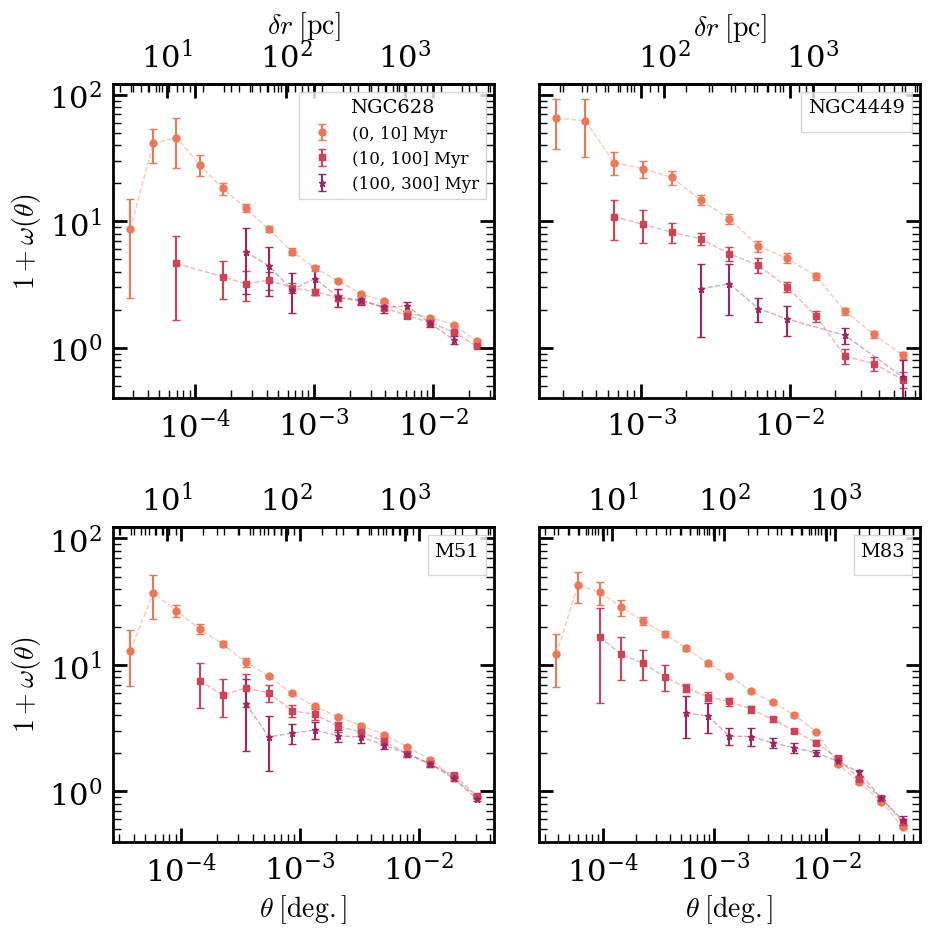
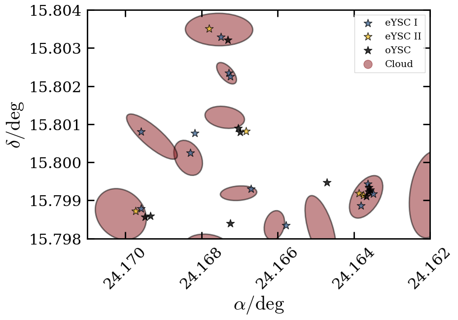
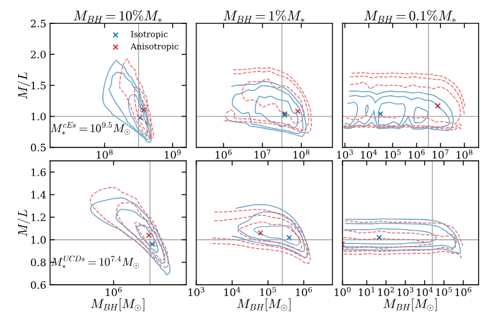

I am broadly interested in studying the physics driving galaxy evolution. I am especially interested in the small-scale physics, such as star formation
and stellar/SMBH feedback, which act as primary drivers of galaxy evolution. I've undertaken a variety of projects to date pursuing these interests.
Star Formation and Stellar Feedback with JWST
As a PhD student at the University of Massachusetts, I have primarily focused on studying the physics of star formation and stellar feedback using JWST observations of
local (within ~10 Mpc) galaxies. With JWST we now have the infrared capabilities to probe the earliest stages of star formation using star clusters, the building blocks of galaxies, as tracers.
I am a member of the FEAST (Feedback in Emerging extrAgalactic Star clusTers)
collaboration, which has made large strides in this area recently.
Two-Point Correlation Function Analysis of Young Star Clusters
My first project as a PhD student focused on using the spatial distributions of the youngest star clusters to study the physics of star formation, and the interpaly between star clusters and their host galaxies. I did so using the two-point correlation function, which quantifies spatial correlation across a variety of scales. My work was the first of its kind to include emerging young star clusters, some of the best tracers of ISM structure. I found evidence for a universal star formation process, driven by turbulence and gravitational instability, and quantified the timescales needed for clusters to disperse throughout their host galaxies. Notably, I found that the spatial randomization of clusters is likely influenced by a variety of galaxy-scale processes, such as mergers and morphological features (e.g., stellar bars). You can check out the peer-reviewed paper for more details: FEAST: Probing Hierarchical Star Formation with the Spatial Distributions of Young Star Clusters

The Relationship Between Molecular Clouds and Young Clusters
My second project at UMass has focused on quantifying the spatial relationship between clusters and clouds. By spatially associating clusters with likely host clouds, I have been able to probe the physics governing the relationship between clouds and clusters, and derive direct estimates of cloud-scale star formation efficiences. This analysis has also provided insight into where exactly star formation is occuring in galaxies, among other things. I am currently writing up this paper, so check back soon for updates!

Dynamical SMBH Detection with JWST
As an undergraduate at the University of Michigan, I focused on studying the ability of JWST to detect supermassive black holes in the most compact galaxies with Schwarzschild modeling. Constrainign SMBH
presence and masses in such systems is crucial in expanding our understanding of galxy-SMBH co-evolution. Working with Professor Monica Valluri and Dr. Behzad Tahmasebzadeh, I helped our group prepare
to interpret first-of-their-kind JWST observations of comapct galaxies in the Virgo galaxy cluster.
The Lower Limit of SMBH Detection with JWST
My undergraduate work led to a paper with Behzad Tahmasebzadeh aiming to quantify JWST's ability to detect SMBHs. Using a range of accurate mass models I devised, we
were able to generate mock observations and perform Schwarzschild modeling on our test galaxies, directly comapring measured SMBH masses to the intrinsic values. We found that
JWST can reliably detect SMBHs when they comprise ~1% or mroe of a galaxies stellar mass. To learn more, check out our paper: The Lower Limit of Dynamical Black Hole Masses Detectable in Virgo Compact Stellar Systems Using the JWST/NIRSpec IFU .
This work helped us interpret the very first dynamical SMBH mass measurement with JWST. Our colloboration found a SMBH in a ultra comapct galaxy, UCD-736, with a half-light radius of
only ~15 pc! You can read more about the detection here: A Supermassive Black Hole in a Diminutive Ultracompact Dwarf Galaxy Discovered with JWST/NIRSpec+IFU .
